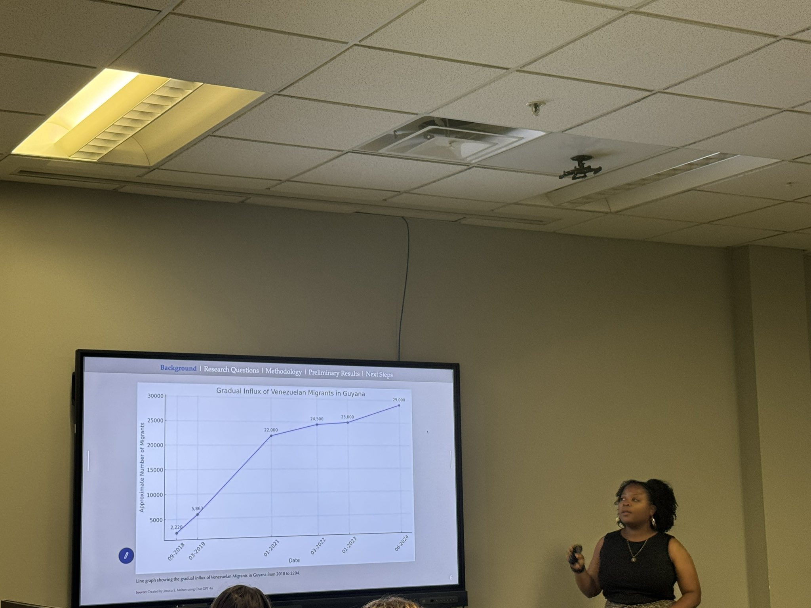
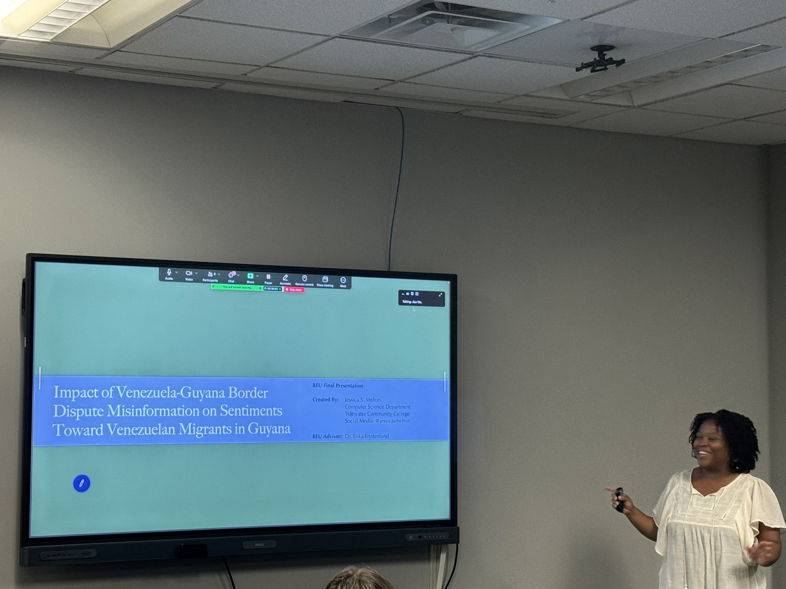
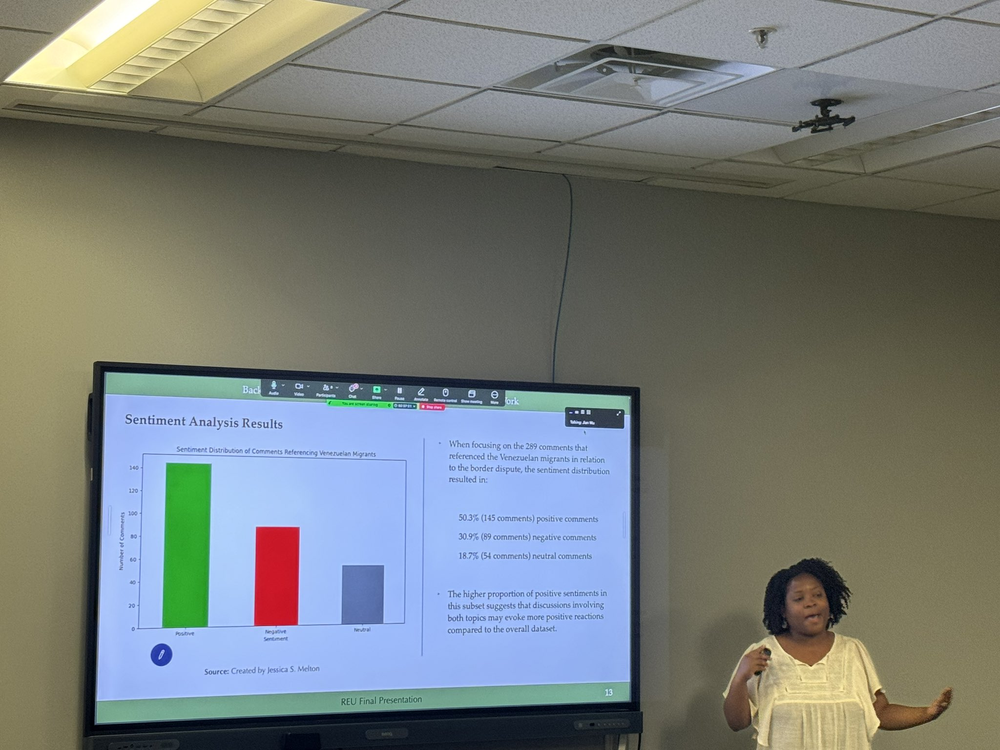
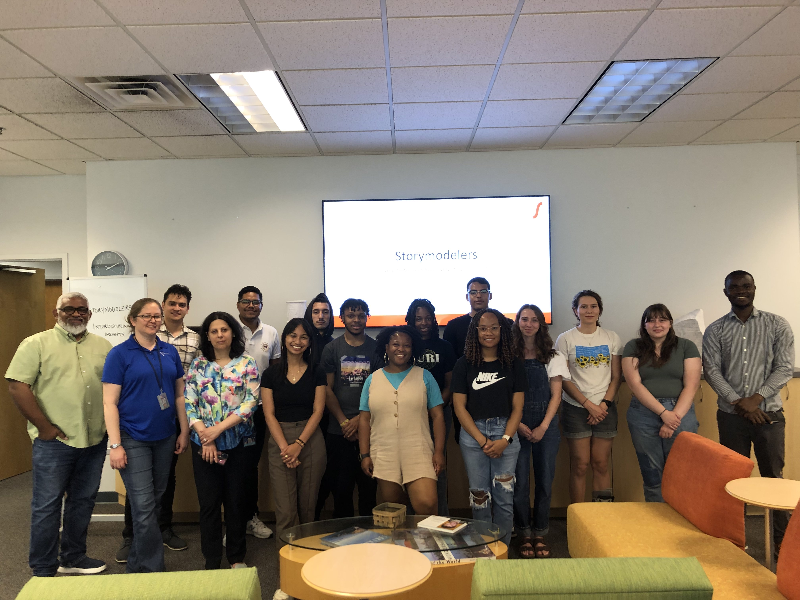
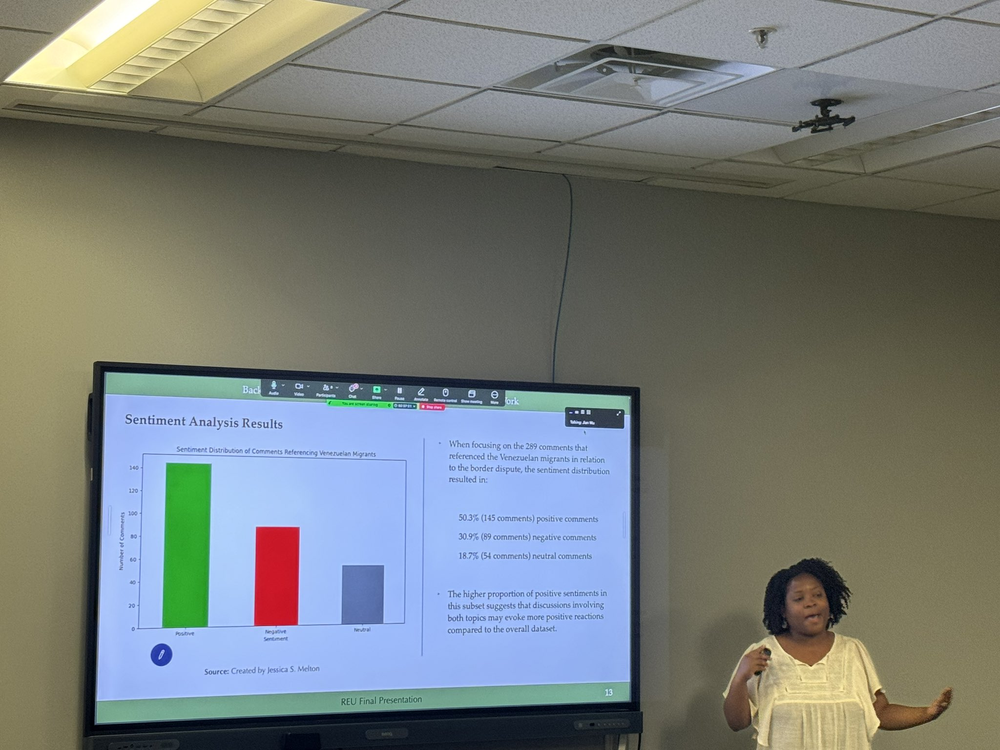
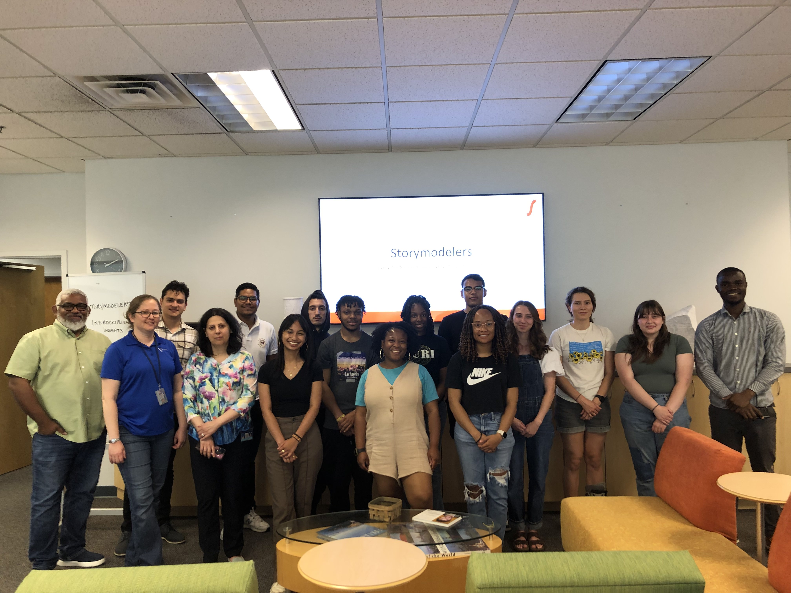
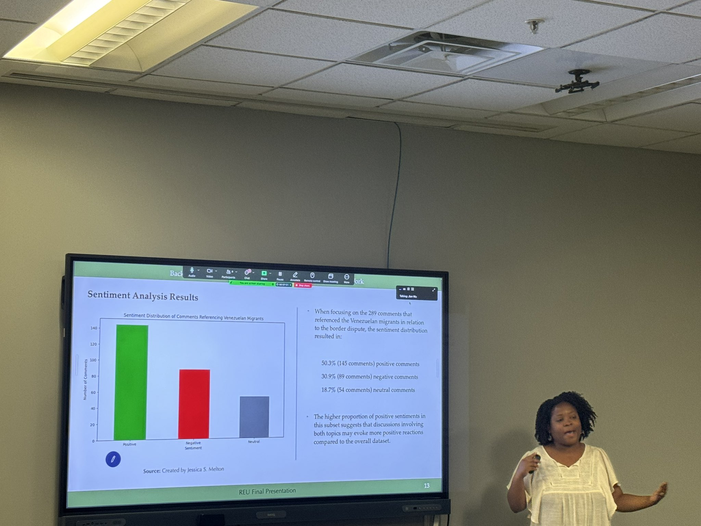
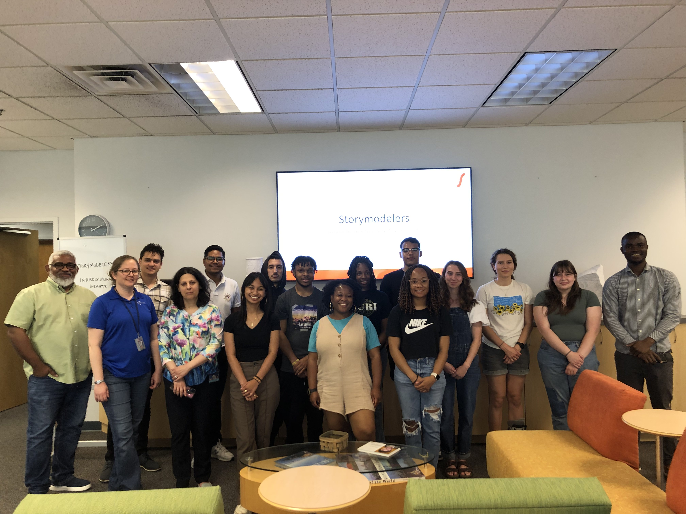

print ( "Hello, World!" )
My name is Jessica Melton, and I am a sophomore at Tidewater Community College pursuing an Associate of Science in Computer Science. I will be transferring to Old Dominion University in the fall of 2025 to pursue my ultimate educational goal of completing a Master of Science in Data Science and Analytics. I have a passion for understanding and addressing societal challenges and believe that, through data analytics, there is immense potential for harnessing information to drive meaningful change.


 




